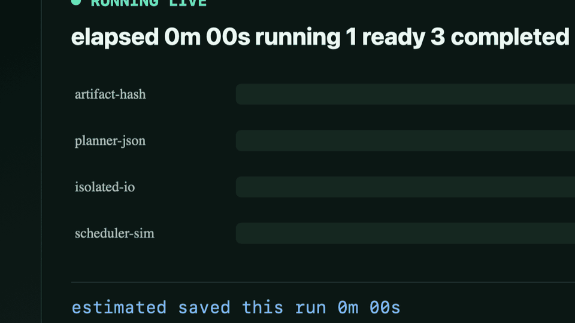

Parallelize only what is proven safe.
AtomLane keeps one typed safety core, uses platform-native routes for macOS Stable and native Windows Preview, and tailors each plan to the real workload. Long runs stay visible and savings stay honestly labeled.
Watch the work while it runs
20-second deterministic demo

The live runner streams elapsed time, running/ready/completed/failed counters, and current savings throughout long execution. Windows uses UTF-8 pipes by default and optional output-only ConPTY for programs needing terminal-shaped output; explicit ConPTY stdin fails before target creation in this Preview. Captured stdout/stderr is returned with the completed result; ConPTY does not turn task output into a live UI stream.
Native Windows Preview evidence
Job Object · ConPTY · PowerShell · UTF-8
Windows five-minute benchmark
Observed durations · separate cumulative history
Five-minute parallel benchmark
Fast regression report retained below
Python refactor safety evidence
Static fixtures · no target execution
Release checks
PASSED
Host regression subsystems
Portable and host-local checks grouped by responsibility
All regression cases
| Behavior | Subsystem | Status | Duration |
|---|
Build provenance
Machine-readable evidence included
Community pulse
Aggregate GitHub signals only